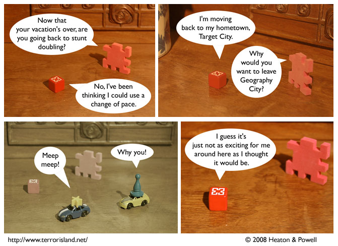

Strip #263
— Friday, February 15, 2008
With apologies to Paul Julian
Notes, Thoughts, &c.
Ben’s Notes
Target City is a pretty nice place.
Lewis’s Notes
I teach a logic class as part of my being a philosophy graduate student. One of the lessons I try to teach the students is that learning logic is, in part, about knowing how to defeat the robots when the eventually rise up against us. If you think I am kidding, you can check with any of the students in my class, and they will verify this for you.
Actually, on second thought, it would be better if you didn’t harass my students. Just take my word for it.